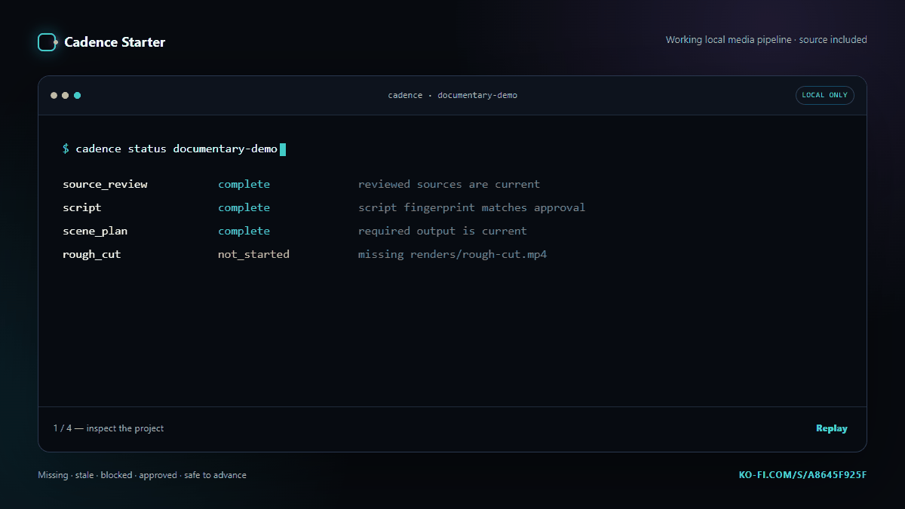

WITHOUT A CONTENT FINGERPRINT
script.mdgets approved- The ending is rewritten
- The old approval still looks valid
- Scenes and renders continue from stale work
LOCAL WORKFLOW GUARDRAIL
Cadence Starter is a small, readable Python engine for solo media pipelines. It fingerprints approvals, catches stale files, blocks dependent work, and names the next safe action.

THE EXPENSIVE LITTLE BUG
Most folders, boards, and scripts remember that something was approved. They do not remember exactly what was approved.
WITHOUT A CONTENT FINGERPRINT
script.md gets approvedWITH CADENCE
script.md gets fingerprintedWHAT ARRIVES AFTER CHECKOUT
cadence_starter/ approvals.py resolver.py runner.py validation.py cli.py schemas/ templates/ examples/glass-frog-demo/ docs/ tests/ README.md LICENSE.txt cadence.bat / cadence.sh
Missing, current, stale, blocked, waiting, and complete states derived from real files.
Reviews attach to exact file content and reopen automatically after a change.
Dry-run first, allow-listed executables, bounded retries, and JSON execution logs.
A fictional documentary example plus templates, schemas, walkthrough, and extension guides.
One operator can use and modify it across unlimited personal and client media projects.
FIVE COMMANDS TO THE POINT
Cadence does not replace your creative tools. It keeps their outputs honest.
01cadence init projects/film
02cadence validate projects/film
03cadence status projects/film
04cadence next projects/film
05cadence approve projects/film script
BUY IT IF
SKIP IT IF
FREE FIELD NOTES
Why approval state must be tied to content, not a checkbox.
READ -> GUIDE 02A nine-stage production map with explicit human gates.
READ -> GUIDE 03Timestamps, content hashes, dependencies, and what each can prove.
READ ->BEFORE YOU BUY
No. There is no Claude, Anthropic, OpenAI, or other model dependency. If you later connect an AI tool, you use your own account and credentials.
No. It is the workflow layer around tools and manual stages. It tracks whether inputs and outputs are present, current, approved, and safe to advance.
You need basic terminal and text-file comfort. The included example works immediately; connecting custom generators or renderers requires reviewing command arrays or scripts.
Cadence itself has no telemetry, account, hosted service, or network client. External tools you choose to connect have their own policies.
One operator may modify and use Cadence for unlimited personal and commercial media projects. Redistribution, resale, team sharing, and offering the tool itself as a service are excluded.
ONE PURCHASE / NO SUBSCRIPTION
CADENCE STARTER 1.0.0
$49 Pay more if it saves you more. GET THE CUSTOMER ZIP Instant digital delivery via Ko-fi